プレスキット
Roots をご紹介いただく際にお使いください。紹介文・画像は、紹介の目的であればご自由にお使いいただけます（画像の改変はご遠慮ください）。ご不明な点は roots.app@outlook.jp までお問い合わせください。
紹介文
アプリ名
Roots - 日々の記録を、ひとつに。
ひとこと
日記・メモ・リマインダー・予定・習慣
短い紹介
日記・メモ・リマインダー・予定・習慣といった、暮らしの記録を Roots ひとつに。毎日の小さな記録が、少しずつ根を張って育っていきます。機能は多くても、ひとつひとつはシンプルに。毎日開きたくなる軽さを大切にしています。まずは今日の一行から、Roots で始めましょう。
長い紹介
日記も、メモも、リマインダーも、予定も、習慣も。散らばりがちな毎日の記録を、Roots ひとつに集めるライフログアプリです。機能は多くても、ひとつひとつは小さくシンプルに。毎日開いても重く感じないことを大切にしています。
【まず開くのは「きょう」】
起動すると、いつも今日のページが開きます。今日の予定・リマインダー・習慣、そして日記の書きかけが1枚に並び、その日のことがひと目で分かります。ホーム画面のウィジェットからも、今日のページや次の予定、習慣の様子が見られます。
【書くのは、一行からでいい】
その日のことは日記へ、買い物リストのように日付のないものはメモへ。日記はタイトルなしで書き出せて、気分の顔をひとつ選ぶだけでもかまいません。その日の写真も1枚添えられます。
【振り返りは、いつもの画面の中に】
カレンダーの日付をタップすると、その日に書いた日記・メモ・リマインダーが並びます。「きょう」のページには過去の日記がしおりのように1枚挟まり、開くたびに入れ替わります。1年前の今日のことも、埋もれていた昔の一日も、ふと目に入ります。
【続いていることが、静かに見える】
習慣は「毎日」「曜日ごと」「N日おき」から選べて、読んだページ数のような数値も残せます。数字で追い立てる画面にはしていません。
【自分に合う形に】
日記・メモ・リマインダー・予定・習慣・気分・今日の一枚は、それぞれオンとオフを切り替えられます。メイン・日記・メモ・予定の色も、一色に揃えたり、機能ごとに分けたりできます。
【記録は、あなたのもの】
書いたものはこの iPhone の中に保存され、私たちのサーバーへ送ることはありません。広告も、利用状況の収集もありません。すべての記録は1つのファイルに書き出して読み戻せるので、機種変更の控えにも、生成AIに渡して振り返る材料にも使えます。Face ID やパスコードで、アプリごと鍵をかけることもできます。
基本情報
| アプリ名 | Roots |
|---|---|
| 開発 | Hirotaka Shigeoka（個人開発） |
| 対応機種 | iPhone（iOS 18 以降）。iPad・Mac には対応していません |
| 言語 | 日本語 |
| カテゴリ | ライフスタイル |
| 料金 | 基本無料。記録の機能はすべて無料で使え、配色・習慣の個数・ウィジェット・ヘルスケアと天気の連携・月・年の記録を広げるプレミアムプラン（月額・年額のアプリ内課金、最初の1週間は無料）があります。料金は App Store でご確認ください |
| 配信地域 | 日本ほか（EU 域内では配信していません） |
| プライバシー | 記録は端末の中にだけ保存されます。アカウント登録はなく、広告・利用状況の収集もありません |
| 初回リリース | 2026年8月22日 |
| App Store | https://apps.apple.com/jp/app/id6796982679 |
| 紹介ページ | https://shg1err.github.io/roots-support/ |
| お問い合わせ | roots.app@outlook.jp |
アイコン・ロゴ


スクリーンショット
App Store と同じ9枚です（1320×2868・PNG）。画像をタップすると元の大きさで開きます。

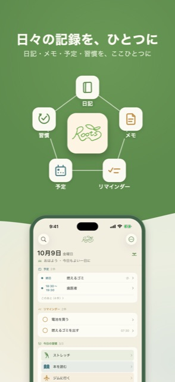

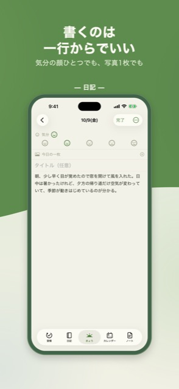

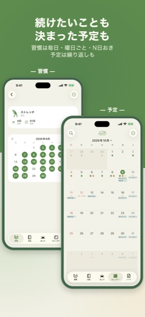

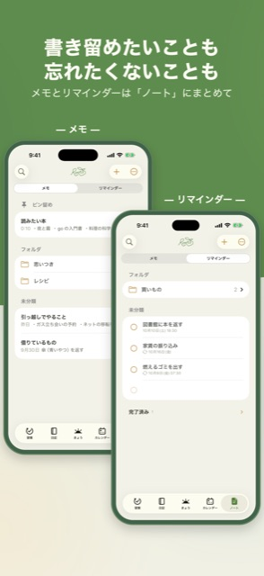

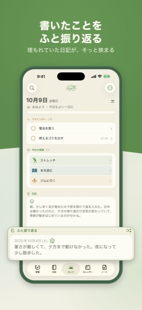

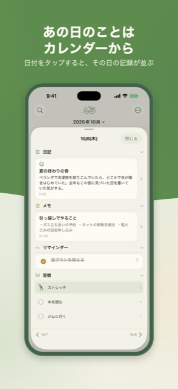

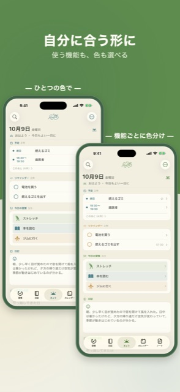

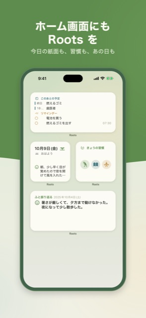

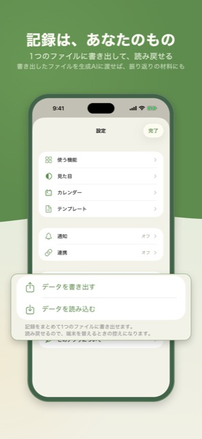
SNS 用の画像
X 向け（16:9・2400×1350）と Instagram 向け（1:1・1440×1440）の各9枚です（JPEG）。

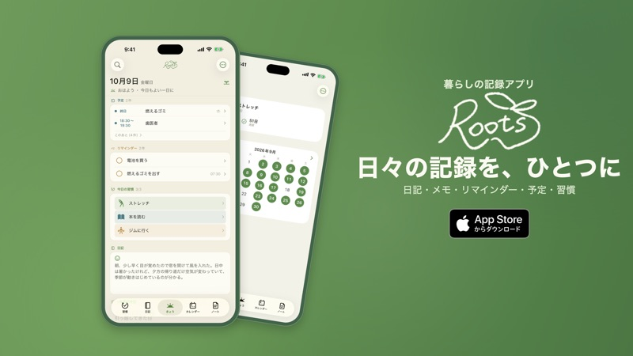

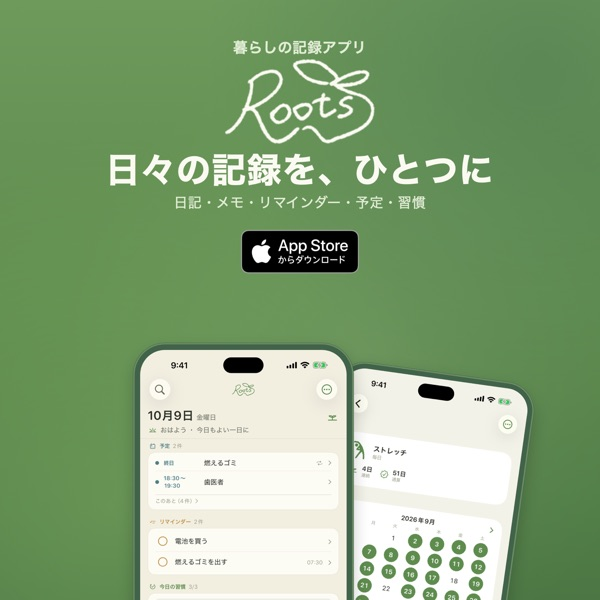
X 向け: 1 ・ 2 ・ 3 ・ 4 ・ 5 ・ 6 ・ 7 ・ 8 ・ 9
Instagram 向け: 1 ・ 2 ・ 3 ・ 4 ・ 5 ・ 6 ・ 7 ・ 8 ・ 9


ご紹介いただく際のお願い
- 料金は変わることがあるため、記事では App Store の表示をご確認ください
- App Store のバッジを使う場合は、Apple のガイドラインに沿ってお使いください
- 掲載いただいた際は、お知らせいただけるとうれしいです